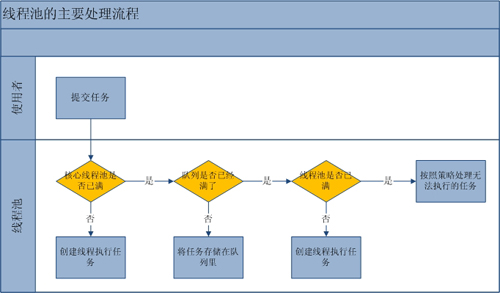

作者：方腾飞 原文发表于infoQ：http://www.infoq.com/cn/articles/java-threadPool
1. 引言
合理利用线程池能够带来三个好处。第一：降低资源消耗。通过重复利用已创建的线程降低线程创建和销毁造成的消耗。第二：提高响应速度。当任务到达时，任务可以不需要的等到线程创建就能立即执行。第三：提高线程的可管理性。线程是稀缺资源，如果无限制的创建，不仅会消耗系统资源，还会降低系统的稳定性，使用线程池可以进行统一的分配，调优和监控。但是要做到合理的利用线程池，必须对其原理了如指掌。
2.线程池的使用
线程池的创建
我们可以通过ThreadPoolExecutor来创建一个线程池。
1 | new ThreadPoolExecutor(corePoolSize, maximumPoolSize, |
2 | keepAliveTime, milliseconds,runnableTaskQueue, threadFactory,handler); |
创建一个线程池需要输入几个参数：
- corePoolSize（线程池的基本大小）：当提交一个任务到线程池时，线程池会创建一个线程来执行任务，即使其他空闲的基本线程能够执行新任务也会创建线程，等到需要执行的任务数大于线程池基本大小时就不再创建。如果调用了线程池的prestartAllCoreThreads方法，线程池会提前创建并启动所有基本线程。
- runnableTaskQueue（任务队列）：用于保存等待执行的任务的阻塞队列。可以选择以下几个阻塞队列。
- ArrayBlockingQueue：是一个基于数组结构的有界阻塞队列，此队列按 FIFO（先进先出）原则对元素进行排序。
- LinkedBlockingQueue：一个基于链表结构的阻塞队列，此队列按FIFO （先进先出） 排序元素，吞吐量通常要高于ArrayBlockingQueue。静态工厂方法Executors.newFixedThreadPool()使用了这个队列。
- SynchronousQueue：一个不存储元素的阻塞队列。每个插入操作必须等到另一个线程调用移除操作，否则插入操作一直处于阻塞状态，吞吐量通常要高于LinkedBlockingQueue，静态工厂方法Executors.newCachedThreadPool使用了这个队列。
- PriorityBlockingQueue：一个具有优先级得无限阻塞队列。
- maximumPoolSize（线程池最大大小）：线程池允许创建的最大线程数。如果队列满了，并且已创建的线程数小于最大线程数，则线程池会再创建新的线程执行任务。值得注意的是如果使用了无界的任务队列这个参数就没什么效果。
- ThreadFactory：用于设置创建线程的工厂，可以通过线程工厂给每个创建出来的线程设置更有意义的名字，Debug和定位问题时非常又帮助。
RejectedExecutionHandler（饱和策略）：当队列和线程池都满了，说明线程池处于饱和状态，那么必须采取一种策略处理提交的新任务。这个策略默认情况下是AbortPolicy，表示无法处理新任务时抛出异常。以下是JDK1.5提供的四种策略。n AbortPolicy：直接抛出异常。
- CallerRunsPolicy：只用调用者所在线程来运行任务。
- DiscardOldestPolicy：丢弃队列里最近的一个任务，并执行当前任务。
- DiscardPolicy：不处理，丢弃掉。
- 当然也可以根据应用场景需要来实现RejectedExecutionHandler接口自定义策略。如记录日志或持久化不能处理的任务。
- keepAliveTime（线程活动保持时间）：线程池的工作线程空闲后，保持存活的时间。所以如果任务很多，并且每个任务执行的时间比较短，可以调大这个时间，提高线程的利用率。
- TimeUnit（线程活动保持时间的单位）：可选的单位有天（DAYS），小时（HOURS），分钟（MINUTES），毫秒(MILLISECONDS)，微秒(MICROSECONDS, 千分之一毫秒)和毫微秒(NANOSECONDS, 千分之一微秒)。
向线程池提交任务
我们可以使用execute提交的任务，但是execute方法没有返回值，所以无法判断任务知否被线程池执行成功。通过以下代码可知execute方法输入的任务是一个Runnable类的实例。
01 | threadsPool.execute(new Runnable() { |
我们也可以使用submit 方法来提交任务，它会返回一个future,那么我们可以通过这个future来判断任务是否执行成功，通过future的get方法来获取返回值，get方法会阻塞住直到任务完成，而使用get(long timeout, TimeUnit unit)方法则会阻塞一段时间后立即返回，这时有可能任务没有执行完。
03 | Object s = future.get(); |
05 | } catch (InterruptedException e) { |
09 | } catch (ExecutionException e) { |
线程池的关闭
我们可以通过调用线程池的shutdown或shutdownNow方法来关闭线程池，但是它们的实现原理不同，shutdown的原理是只是将线程池的状态设置成SHUTDOWN状态，然后中断所有没有正在执行任务的线程。shutdownNow的原理是遍历线程池中的工作线程，然后逐个调用线程的interrupt方法来中断线程，所以无法响应中断的任务可能永远无法终止。shutdownNow会首先将线程池的状态设置成STOP，然后尝试停止所有的正在执行或暂停任务的线程，并返回等待执行任务的列表。
只要调用了这两个关闭方法的其中一个，isShutdown方法就会返回true。当所有的任务都已关闭后,才表示线程池关闭成功，这时调用isTerminaed方法会返回true。至于我们应该调用哪一种方法来关闭线程池，应该由提交到线程池的任务特性决定，通常调用shutdown来关闭线程池，如果任务不一定要执行完，则可以调用shutdownNow。
3. 线程池的分析
流程分析：线程池的主要工作流程如下图：

从上图我们可以看出，当提交一个新任务到线程池时，线程池的处理流程如下：
- 首先线程池判断基本线程池是否已满？没满，创建一个工作线程来执行任务。满了，则进入下个流程。
- 其次线程池判断工作队列是否已满？没满，则将新提交的任务存储在工作队列里。满了，则进入下个流程。
- 最后线程池判断整个线程池是否已满？没满，则创建一个新的工作线程来执行任务，满了，则交给饱和策略来处理这个任务。
源码分析。上面的流程分析让我们很直观的了解的线程池的工作原理，让我们再通过源代码来看看是如何实现的。线程池执行任务的方法如下：
01 | public void execute(Runnable command) { |
05 | throw new NullPointerException(); |
09 | if (poolSize >= corePoolSize || !addIfUnderCorePoolSize(command)) { |
13 | if (runState == RUNNING && workQueue.offer(command)) { |
15 | if (runState != RUNNING || poolSize == 0) |
17 | ensureQueuedTaskHandled(command); |
23 | else if (!addIfUnderMaximumPoolSize(command)) |
工作线程。线程池创建线程时，会将线程封装成工作线程Worker，Worker在执行完任务后，还会无限循环获取工作队列里的任务来执行。我们可以从Worker的run方法里看到这点：
05 | Runnable task = firstTask; |
09 | while (task != null || (task = getTask()) != null) { |
4. 合理的配置线程池
要想合理的配置线程池，就必须首先分析任务特性，可以从以下几个角度来进行分析：
- 任务的性质：CPU密集型任务，IO密集型任务和混合型任务。
- 任务的优先级：高，中和低。
- 任务的执行时间：长，中和短。
- 任务的依赖性：是否依赖其他系统资源，如数据库连接。
任务性质不同的任务可以用不同规模的线程池分开处理。CPU密集型任务配置尽可能少的线程数量，如配置Ncpu+1个线程的线程池。IO密集型任务则由于需要等待IO操作，线程并不是一直在执行任务，则配置尽可能多的线程，如2*Ncpu。混合型的任务，如果可以拆分，则将其拆分成一个CPU密集型任务和一个IO密集型任务，只要这两个任务执行的时间相差不是太大，那么分解后执行的吞吐率要高于串行执行的吞吐率，如果这两个任务执行时间相差太大，则没必要进行分解。我们可以通过Runtime.getRuntime().availableProcessors()方法获得当前设备的CPU个数。
优先级不同的任务可以使用优先级队列PriorityBlockingQueue来处理。它可以让优先级高的任务先得到执行，需要注意的是如果一直有优先级高的任务提交到队列里，那么优先级低的任务可能永远不能执行。
执行时间不同的任务可以交给不同规模的线程池来处理，或者也可以使用优先级队列，让执行时间短的任务先执行。
依赖数据库连接池的任务，因为线程提交SQL后需要等待数据库返回结果，如果等待的时间越长CPU空闲时间就越长，那么线程数应该设置越大，这样才能更好的利用CPU。
建议使用有界队列，有界队列能增加系统的稳定性和预警能力，可以根据需要设大一点，比如几千。有一次我们组使用的后台任务线程池的队列和线程池全满了，不断的抛出抛弃任务的异常，通过排查发现是数据库出现了问题，导致执行SQL变得非常缓慢，因为后台任务线程池里的任务全是需要向数据库查询和插入数据的，所以导致线程池里的工作线程全部阻塞住，任务积压在线程池里。如果当时我们设置成无界队列，线程池的队列就会越来越多，有可能会撑满内存，导致整个系统不可用，而不只是后台任务出现问题。当然我们的系统所有的任务是用的单独的服务器部署的，而我们使用不同规模的线程池跑不同类型的任务，但是出现这样问题时也会影响到其他任务。
5. 线程池的监控
通过线程池提供的参数进行监控。线程池里有一些属性在监控线程池的时候可以使用
- taskCount：线程池需要执行的任务数量。
- completedTaskCount：线程池在运行过程中已完成的任务数量。小于或等于taskCount。
- largestPoolSize：线程池曾经创建过的最大线程数量。通过这个数据可以知道线程池是否满过。如等于线程池的最大大小，则表示线程池曾经满了。
- getPoolSize:线程池的线程数量。如果线程池不销毁的话，池里的线程不会自动销毁，所以这个大小只增不减。
- getActiveCount：获取活动的线程数。
通过扩展线程池进行监控。通过继承线程池并重写线程池的beforeExecute，afterExecute和terminated方法，我们可以在任务执行前，执行后和线程池关闭前干一些事情。如监控任务的平均执行时间，最大执行时间和最小执行时间等。这几个方法在线程池里是空方法。如：
1 | <b>protected</b> <b>void</b> beforeExecute(Thread t, Runnable r) { } |
6. 参考资料
文章的脚注信息由WordPress的wp-posturl插件自动生成
花名清英，并发网创始人，蚂蚁金服技术专家。目前工作于支付宝微贷事业部，关注互联网金融，并发编程和敏捷实践。
Latest posts by 方 腾飞 (see all)

 (8 votes, average: 4.38 out of 5)
(8 votes, average: 4.38 out of 5)
你好，看了你的文章，有2点疑问
1 一个线程是不是只做一个任务？
2 电脑是双核的， 那不是最多只能同时处理2个线程吗？如何能够同时处理多个线程呢？
1：一个线程做完一个任务再做另外一个。
2：如果是不支持超线程的CPU，在同一时刻的确只能处理2个线程，但是并不意味着双核的CPU只能处理两个线程，它可以通过切换上下文来执行多个线程。比如我只有一个大脑，但是我要处理5个人提交的任务，我可以处理完A的事情后，把事情的中间结果保存下，然后再处理B的，然后再读取A的中间结果，处理A的事情。
你好呀，看了你前面的关于介绍synchronized方面的文章，对自己写的一个使用多线程下载的有点晕，
Pool <—— Task(Runnable) <—- void run(synchronized(this){ downLoadService(webUrl,savePath)})
而在调用的过程中采用是
for(….)
{
pool.execute(new Task(arg1 ,arg2));
}
在这个过程中使用synchroinzed方法有效么，当时也是老大催的紧，没时间细想，现在正在看这部分代码，越看越觉得有问题，所以问下。。
(ps: 怎么评论的时候不能上传图片啊。。。)
如果是在线程池的任务里，试用同步没有什么效果的，因为只有一个线程会执行当前任务。
“需要注意的是如果一直有优先级高的任务提交到队列里，那么优先级高的任务可能永远不能执行” 这句话应该是错的吧， 应该是“优先级低的任务可能永远不能执行”
对的，多谢指正。
ThreadFactory：用于设置创建线程的工厂，可以通过线程工厂给每个创建出来的线程设置更有意义的名字，Debug和定位问题时非常又帮助。
上面是在“创建一个线程池需要输入几个参数”中介绍的，但是没有发现ThreadFactory是哪个地方出现的参数。
是我写得有遗漏，已经修正，多谢了。ThreadPoolExecutor有这样的构造方法，在RejectedExecutionHandler前面可以传递java.util.concurrent.ThreadFactory
ThreadPoolExecutor(int, int, long, java.util.concurrent.TimeUnit, java.util.concurrent.BlockingQueue, java.util.concurrent.ThreadFactory, java.util.concurrent.RejectedExecutionHandler)
hao!
一个小问题，一个线程池中执行不同种类并且不相关的任务，是不是一个好的设计？
看应用场景的。如果任务数很少，又对任务没有执行速度要求，可以放在一个线程池里。
线程池的配置大小是基本线程池大小还是最大线程池大小呢
创建线程池的代码
new ThreadPoolExecutor(corePoolSize, maximumPoolSize,keepAliveTime, milliseconds,runnableTaskQueue, threadFactory,handler);
其中的milliseconds应该为timeUnit
keepAliveTime这个参数有点含糊不清，应该说的再清楚一点。
例如：超出队列时创建线程(当然必须小于maximumPoolSize)运行任务后，如果再没有其它任务可运行也就空闲（线程池不在提交任务和队列中的任务已经被corePoolSize的线程执行完成），空闲超出这个参数时间线程结束(理解为销毁）。
while (task != null || (task = getTask()) != null) { 线程调用getTask()进行阻塞。
private Runnable getTask() {
boolean timedOut = false; // Did the last poll() time out?
retry:
for (;;) {
int c = ctl.get();
int rs = runStateOf(c);
// Check if queue empty only if necessary.
if (rs >= SHUTDOWN && (rs >= STOP || workQueue.isEmpty())) {
decrementWorkerCount();
return null;
}
boolean timed; // Are workers subject to culling?
for (;;) {
int wc = workerCountOf(c);
timed = allowCoreThreadTimeOut || wc > corePoolSize;
if (wc <= maximumPoolSize && ! (timedOut && timed)) // 2.因为timeOut=true，timed=true，条件不成立
break;
if (compareAndDecrementWorkerCount(c))
return null; // 返回null，线程结束
c = ctl.get(); // Re-read ctl
if (runStateOf(c) != rs)
continue retry;
// else CAS failed due to workerCount change; retry inner loop
}
try {
Runnable r = timed ?
workQueue.poll(keepAliveTime, TimeUnit.NANOSECONDS) : // 注意这里的poll和take的区别
workQueue.take();
if (r != null)
return r;
timedOut = true; // 1. poll在指定的时间内取不到，这timeOut=true
} catch (InterruptedException retry) {
timedOut = false;
}
}
}
可能是jdk版本不同（我的openjdk1.7），我看到的源码和您的有些不一样（如下）， 有一个问题想请教下： 既然worker 每次都执行一个任务， 这里为啥要：w.lock()/unlock()?多谢啦
final void runWorker(Worker w) {
Runnable task = w.firstTask;
w.firstTask = null;
boolean completedAbruptly = true;
try {
while (task != null || (task = getTask()) != null) {
w.lock();
clearInterruptsForTaskRun();
try {
beforeExecute(w.thread, task);
Throwable thrown = null;
try {
task.run();
} catch (RuntimeException x) {
thrown = x; throw x;
} catch (Error x) {
thrown = x; throw x;
} catch (Throwable x) {
thrown = x; throw new Error(x);
} finally {
afterExecute(task, thrown);
}
} finally {
task = null;
w.completedTasks++;
w.unlock();
}
}
completedAbruptly = false;
} finally {
processWorkerExit(w, completedAbruptly);
}
}
请问一下，如果我的任务需要强调逻辑先后顺序，但是加入线程池中可能有先后顺序的任务放到了多个线程执行，就会导致顺序不一致，是不是就不能使用线程池。有没有什么好的方式来做？